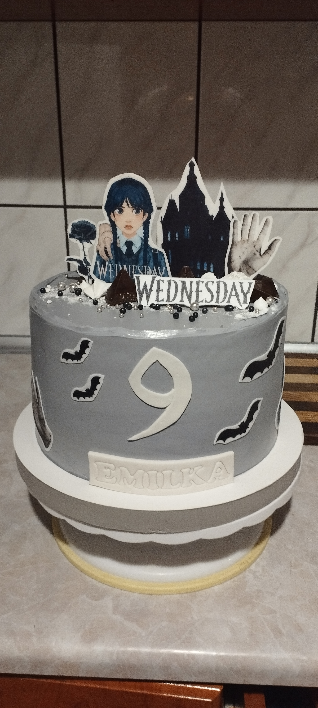
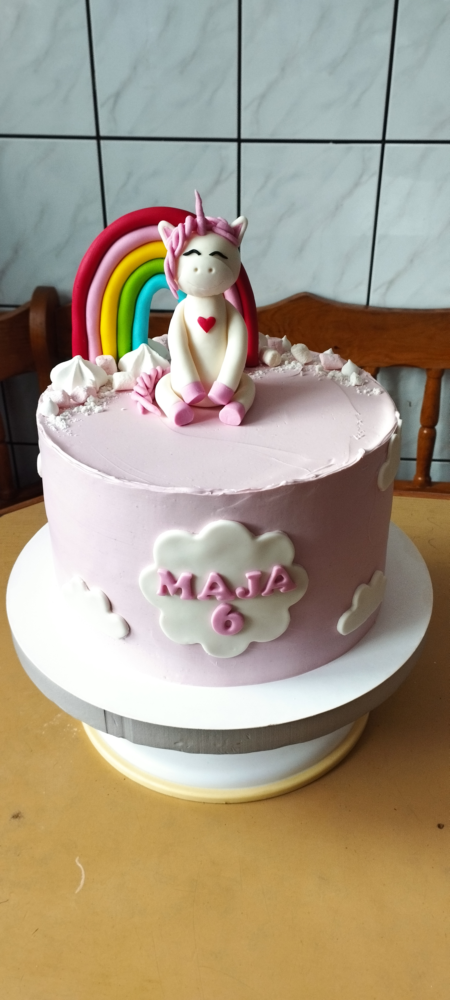

Moje dane
Bardzo mi miło że jesteś na mojej wizytowej stronie internetowej.
Mam na imię
Łucja
i mam
27 lat
. Od 3 lat
jestem mężatką a od 4 miesięcy jestem szczęśliwą mamą cudownej dziewczynki.Mieszkam w
niewielkiej
miejscowości pod Rzeszowem.
Studia
2011 - 2014 rok - IV Liceum Ogólnokształcące im. M. Kopernika w Rzeszowie
2014 - 2018 rok - studia inżynierskie na kierunku Inżynieria Mechaniczna i Materiałowa ; Akademia Górniczo - Hutnicza im. S. Staszica w Krakowie
2019 - 2021 rok - studia magisterskie na kierunku Mechanika i Budowa Maszyn ; Politechnika Rzeszowska im. I. Łukasiewicza
Praca
2016 - Sprzedawca, firma TJX Company
Zakres obowiązków obejmował odpowiednią obsługę klienta,
dbanie
o
porządek i odpowiedni układ produktów.
2018 - 2022 - Operator obrabiarek sterowanych numerycznie
Praca obejmowała obsługę różnego
rodzaju
obrabiarek
sterowanych numerycznie, m.in. frezarek 5-cio osiowych i frezarko-tokarek. Przygotowanie
materiału
do
obróbki i
oczyszczenie gotowego produktu po obróbce, te czynności również były jednymi z wielu obowiazków.
2022 - Inżynier kontroli jakości
Do zakresu obowiazków można zaliczyć m.in. przygotowywanie
raportów
dotyczących wydajności i efektywności produkcji.
Hobby
Moją największą pasją jest wykonywanie wszelkiego rodzaju wyrobów cukierniczych, przede wszystkim tortów i ciast. Poniżej zostawiam kilka zdjęć z moimi ostatnimi pracami ;). Poza cukiernictem bardzo lubię dbać o swoje zdrowie i kondycję fizyczną. Przede wszystkim ćwiczyć siłowo a latem jeździć na rowerze.
 Ulubieńcy
| Rodzaj serialu | Tytuł | Lata emisji | Ilość sezonów |
|---|---|---|---|
| Komediowy | The office | 2005-2013 | 9 |
| Friends | 1994-2004 | 10 | |
| Medyczny | Grey's Anatomy | 2005- | 19 |
| Historyczny | Outlander | 2014- | 6 |
Ulubione ciasta do pieczenia
-
Brownie
- z kremem orzechowym
- z musem truskawkowym
-
Szarlotka
- tradycyjna
- z budyniem
- z wkładką bezową
- 3-bit
-
Sernik
- królewski
- karmelowy